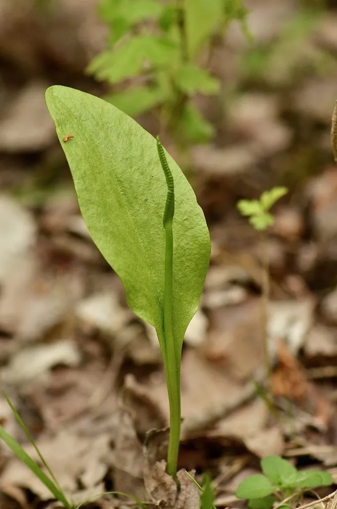

蕨类与裸子植物 · 植物界
瓶尔小草 Ophioglossum vulgatum

瓶尔小草只有一片营养叶和一支细长的孢子穗，形如一枝箭，是古老而形态特殊的蕨类，全草可入药。
- 分类
- 门蕨类植物门纲瓶尔小草纲目瓶尔小草目科瓶尔小草科属瓶尔小草属
- 栖息环境
- 草地、林缘、溪边与阴湿山坡，喜阴湿
- 地理分布
- 中国各地及北半球温带、亚热带地区
- 保护级别
- 暂无评估；野生种群较少，需保护生境
物种志
瓶尔小草是瓶尔小草科小型蕨类，株高 10–25 cm。根状茎短而直立，肉质。它通常只有一片营养叶，卵状披针形或椭圆形，全缘，叶脉网状；孢子穗从叶柄基部或营养叶基部伸出，细长如剑，顶端着生许多孢子囊，形成穗状，形似一支箭，因此有“一枝箭”之称。
瓶尔小草喜阴湿环境，常生于草地、林缘、溪边与阴湿山坡，在温带地区分布较广。它属于古老的瓶尔小草类，叶和孢子穗结构特殊，对研究蕨类植物的演化具有重要意义。瓶尔小草以孢子繁殖，生长缓慢，种群数量不大。全草在民间作药用，有清热解毒、活血散瘀、消肿止痛之效，用于毒蛇咬伤、跌打损伤等症。它在形态上与其他蕨类差别很大，常被误认为不是蕨类。
形态与习性
- 株高10–25 cm
- 叶通常仅 1 片，全缘
- 孢子穗细长如剑，形似“一枝箭”
- 繁殖孢子繁殖，生长缓慢
- 药用全草清热解毒、活血散瘀
趣味知识
- 瓶尔小草只有一片叶和一支细长的孢子穗，像一支箭插在地上。
- 它属于古老的瓶尔小草类，不是常见的羽状蕨类。
- 全草在民间用于毒蛇咬伤、跌打损伤，但需遵医嘱使用。